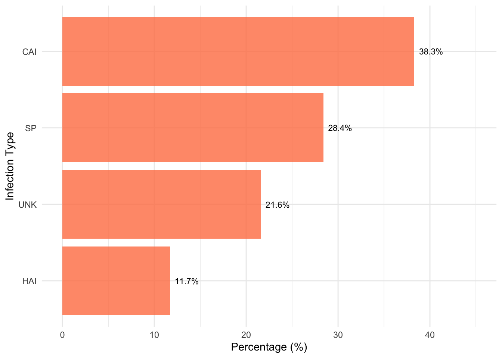
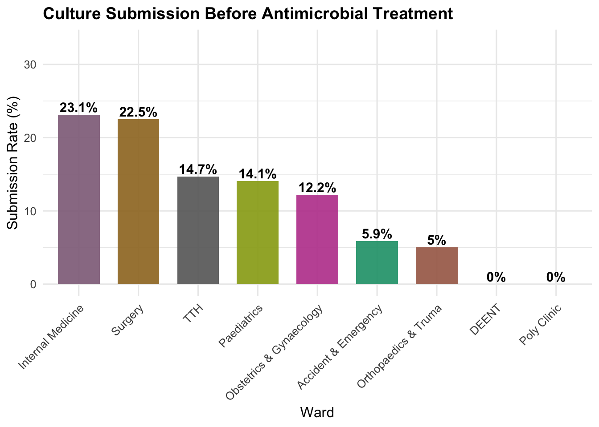

| Metric | Value | Interpretation |
|---|---|---|
| Patients Surveyed | 427 | Full hospital coverage |
| Antimicrobial Use Prevalence | 65.1% | High usage; requires review |
| Guideline Adherence | 45.2% | Below target; training needed |
| Culture Before Treatment | 14.7% | Critical gap; diagnostic stewardship needed |
Antimicrobial Use Point Prevalence Survey
Tamale Teaching Hospital – Hospital-Wide Assessment of Prescribing Practices
Full report content in HTML format…
Executive Summary
The Point Prevalence Survey (PPS) conducted in May 2024 assessed antimicrobial prescribing patterns across Tamale Teaching Hospital. Key findings highlight critical gaps in stewardship practices:
Survey Overview & Methodology
Objective
To evaluate antimicrobial prescribing practices, identify stewardship gaps, and inform quality improvement strategies.
Design & Setting
- Type: Point Prevalence Survey
- Date: May 2024
- Location: Tamale Teaching Hospital
- Departments Surveyed: Internal Medicine, Surgery, Pediatrics, Obstetrics & Gynecology, Polyclinic, Trauma & Orthopaedics, DEENT, Accident & Emergency
- Tool Used: Standardized PPS Form
Key Findings
Antimicrobial Use Prevalence
Overall Rate: 65.1%, with 278 out of 427 surveyed patients receiving at least one antimicrobial agent. Visual charts show variation in use across departments, with some departments exceeding 65.1% the hospital wide rate.

Indications for Prescribing
Infection Types: Distribution includes respiratory, urinary, surgical site, and bloodstream infections.
Indications for Prescribing
Infection Types: Distribution of indicators includes Community Acquired Infections, Surgical Prophylaxis and Hospital Acquired Infections.

Empirical vs. Targeted Therapy: Majority of prescriptions were empirical, reflecting low culture submission rates.

Antimicrobial Classes & Agents
Top Agents: Ceftriaxone, Metronidazole, and cefuroxime were most frequently prescribed. With a balanced 1:1 AWaRe Ratio

WHO AWaRe Classification: Majority of agents fall under the ‘Watch’ category, indicating potential for resistance.
The Access-to-Watch ratio is nearly 1:1, which is not ideal. WHO recommends a higher proportion of Access antibiotics to minimize resistance risks.
This balance suggests a need for stewardship interventions to promote Access agents and reduce reliance on Watch antibiotics unless clinically justified.

Quality Indicators Compliance
- Stop/Review Date (56.2%): Moderate compliance; over half of prescriptions had a review date, but improvement is needed to ensure timely reassessment.
- Guideline Adherence (45.2%): Low adherence; indicates a need for training and regular audits to promote evidence-based prescribing.
- Culture Before Treatment (14.7%): Critically low; reflects poor diagnostic stewardship and over-reliance on empirical therapy.
- Biomarker-Based Treatment (34.1%): Limited use; suggests potential to expand diagnostic support for antimicrobial decisions.
- Reason for Indication Documented (40.8%): Weak documentation; undermines accountability and hinders audit effectiveness.

Microbiology & Resistance Data
Culture Submission Rates by Ward: Lowest in high-prescribing wards such as Surgery and A&E.
Resistance Trends: Data not available; future surveys should include antibiogram analysis.
Departmental Contributions to Antimicrobial Consumption
Highest Rates:
-Internal Medicine (23.1%) and Surgery (22.5%) lead in culture submission, but still far below ideal (>80%).
Moderate Rates:
-TTH overall (14.7%), Paediatrics (14.1%), and Obstetrics & Gynaecology (12.2%) show low compliance.
Critical Gaps:
- Accident & Emergency (5.9%) and Orthopaedics & Trauma (5%) have very poor submission rates.
- DEENT and Polyclinic (0%) indicate no cultures submitted at all, which is alarming.

Top Wards/Unit contributing to Most of AM Consumption
Left Side (Red Bars): These wards account for the largest share of antimicrobial use. The first three represent the top contributors i.e ICU, MICU, and NICU.
Cumulative curve reaches ~80% by around 22 out of 36 wards, contributes most of the antimicrobial consumption.
Right Side (Gray Bars): Wards with lower antimicrobial use have minimal impact on overall consumption.

Recommendations
Short-Term Actions
- Conduct targeted training on guideline-based prescribing
- Promote culture-before-treatment campaigns
Medium-Term Goals
- Integrate stewardship prompts into EHR workflows
- Establish AMS champions in each department
Long-Term Strategy
- Develop a hospital-wide antibiogram
- Institutionalize quarterly PPS audits